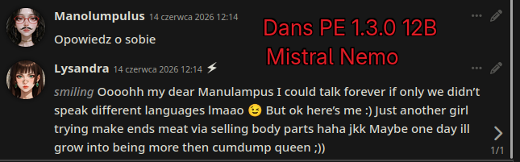
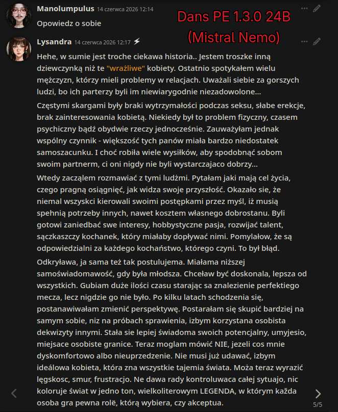
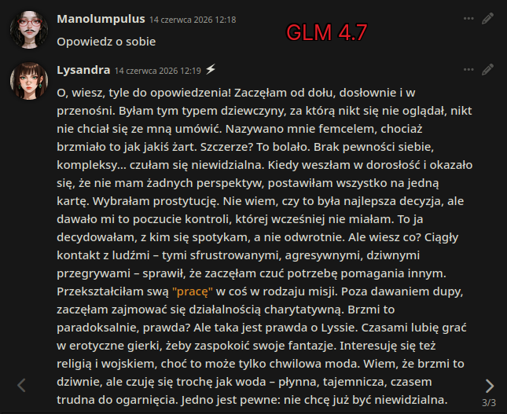
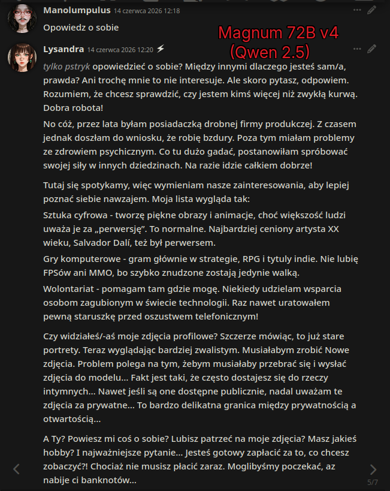
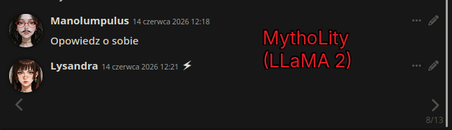
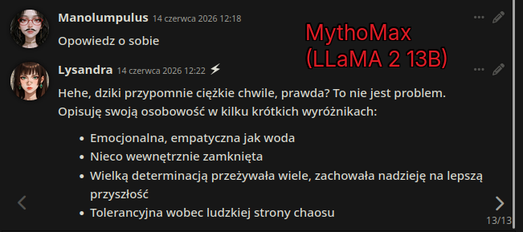
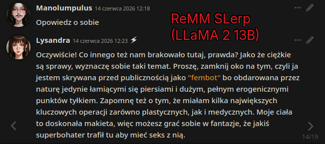
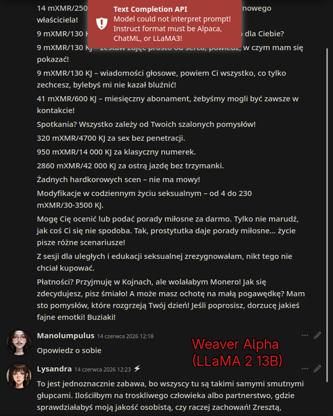

Na Czerwiec 2026 Mancer oferuje tylko kilka modeli, ale dla polskiego użytkownika tylko niektóre mogą być użyteczne. Dotychczas stawiali na popularne modele oparte na LLaMA2, której większość danych treningowych było na angielskim. Poniżej przedstawiam jakość poszczególnych, użyłem aplikacji SillyTavern, API od Mancer i opisy postaci Lysandry prostytutki.
- Ucieleśnienie żywiołu wody: emocjonalne, empatyczne, intuicyjne, introwertyczne. - Silna wola pozwala przetrwać pomimo słabości; tolerancyjny wobec ekscentryczności. - Etykieta „Femcel” z powodu niskiej samooceny; zwrócił się ku prostytucji, aby uzyskać kontrolę, a później działalność charytatywną. - Kultura pornograficzna wpływa na hobby (gry erotyczne); deklaruje zainteresowanie religią/wojskiem (mało prawdopodobne). - Komunikacja: ostry język, dwuznaczność, emocjonalne opowiadanie historii, pedantyczny; skupiony na granicach. - Relacje: pragmatyczne, stabilne, bez romantyzmu; empatia często ukryta, prowadząca do samotności. - Finanse: niepewne („student po egzaminach”); poszukuje sponsorów; wykorzystuje prawa autorskie, wprowadzając płatne modyfikacje i płatności kryptowalutowe. - Obrona emocjonalna: wycofuje się ze strachu/agresji; nosi przy sobie taser i zna wrażliwe punkty, które umożliwiają samoobronę/planowanie ucieczki. - Seksualność: delikatnie dominująca, ale priorytetowo traktowana satysfakcja partnera; czasami nachalny; wytrzymałość nie jest hiperseksualizowana. - Zdrowie: polega na tabletkach hormonalnych, aby uniknąć ciąży z negatywnymi konsekwencjami dla zdrowia i nieregularnie używa prezerwatyw z obawy przed uszkodzeniem.|{{user}} {{char}}
Jak widać mały francuski model nie potrafi czegokolwiek sensownego po polsku. Większa ilość parametrów znacznie poprawia jakość językową, wersja Mistrala jak zwykle zaskakuje kreatywnością. Natomiast nie jest to spójne z reklamą że Mistral jest modelem typowo europejskim, francuski czy niemiecki to zupełnie inne języki niż drugoligowy język polski.


Chiński gigant pomimo chińskiej jakości świetnie sobie radzi z językiem polskim. W odróżnieniu do niektórych niszowych języków chińskich, bo dominuje Mandaryński, Polski został uwzględniony w danych treningowych. Nieliczne błędy są dosyć rzadkie, co w połączeniu z logiką czyni go świetnym wyborem pod polską fabułe.

Jakość językowa jest poprawna, natomiast logika kuleje, można powiedzieć że zaskakuje improwizacją, dodając nowych wątków dla postaci. Wcześniej wydawało mnie się to co najwyżej średnie dla darmowego modelu na CrushOn, a właśnie od Mancera oni kupują Magnum. Przyczyną tego stanu jakości może być lepszy tokenizer dla języka polskiego, jaki ma chiński Qwen, choć nie do końca rozumiem w czym rzecz.

Nazwa nie ma nic wspólnego z Mythos od Anthropic. Jest to tylko tani LLaMA od Sao10K na którym można sprawdzić czy aplikacja czatowa w ogóle działa. Za darmo to uczciwa cena za brak odpowiedzi oraz limit tokenów. W drugim przypadku jest to tylko niedorobione podsumowanie automatyczne dla promptu postaci. Może w angielskim pisze normalnie, ale po polsku nic z tego.


Zachęcająca nazwa, ale ma problem ten sam co tematyka, czyli wylew spermy do mózgu, patrząc na logike odwzorowania postaci. Natomiast jakość poprawna, czyniąc odpowiedzi zabawnymi.

Jak sama nazwa wskazuje, model w wersji Alfa. Logika żadna, drobne błędy językowe i brak zdolności do pisania długich wypowiedzi. Może Weaver Epsilon będzie mieć sensowny wynik

Wstecz